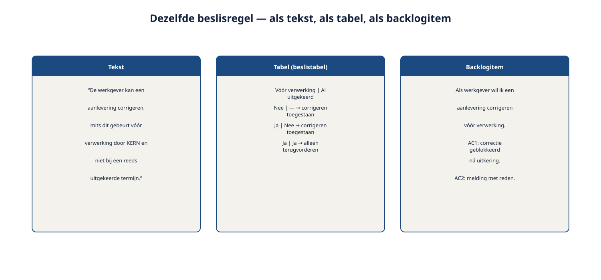

Deel 5 — Requirementssoorten en werkproducten: document, model of backlog
Slidedeck · Ductus-cursus Requirements engineering · niveau 1 · deel 5 van 10 · 25 slides
Slide 1 — Titel
Requirementssoorten en werkproducten
Document, model of backlog
Cursus Requirements Engineering — Niveau 1, deel 5
Ductus
Slide 2 — Vandaag
- Drie hoofdvormen: tekst, model, backlogitem
- Vijf aspecten om bij elke keuze te overwegen
- Paragraaf 14 herschrijven
- Een werkproductenplan opstellen
- Vorm is geen waarheid
Slide 3 — 340 pagina's.
Eén beslisregel, verstopt in paragraaf 14, in vijf zinnen met twee bijzinnen.
Slide 4 — Niet omdat de regel ingewikkeld was.
Vier eenvoudige combinaties.
Omdat de vorm ongeschikt was voor wat de regel moest doen.
Slide 5 — 1. Drie hoofdvormen
Slide 6 — Sterk en zwak
| Vorm | Sterk in | Zwak in |
|---|---|---|
| Tekst | Context, nuance, uitzonderingen | Structuur, combinaties |
| Model | Structuur, samenhang, overzicht | Nuance, onbekende notatie |
| Backlogitem | Iteratief, direct testbaar | Grote geheel, dwarse regels |
Slide 7 — Figuur 5-1

Slide 8 — Geen hiërarchie.
Wel een vraag per requirement:
welke vorm laat déze requirement het beste zien wat hij moet laten zien?
Slide 9 — Opdracht 5.1 — Welke vorm past hier?
Vijf requirements. Kies en onderbouw met minstens twee aspecten.
Individueel · 15 minuten
Slide 10 — 2. Vijf aspecten
Slide 11 — Bij elke vorm
- Doelgroep — voor wie is dit primair bedoeld?
- Herkomst en rationale — waar komt het vandaan, waarom bestaat het?
- Referentie en identificatie — kun je ernaar verwijzen?
- Wijzigingsfrequentie — hoe vaak verandert dit?
- Formaliteitsniveau — hoe groot is het risico?
Slide 12 — Figuur 5-2

Slide 13 — Opdracht 5.2 — De vijf aspecten toepassen
Wie mag een melding corrigeren bij het Nabestaandenloket?
Tekst, model, of allebei — met onderbouwing.
Tweetallen · 20 minuten
Slide 14 — 3. Paragraaf 14 herschrijven
Slide 15 — Citaat
"Een werkgever kan een aanlevering corrigeren binnen vijf werkdagen na indiening, tenzij de aanlevering al is verwerkt... behalve wanneer het een overduidelijke typefout betreft... zolang dit binnen 24 uur gebeurt."
Slide 16 — Opdracht 5.3 — Herschrijven
a. Welke voorwaarden zitten hierin verstopt?
b. Herschrijf als tabel
c. Wat gaat er in de tabel verloren — en waar leg je dát dan vast?
Groepjes van drie · 25 minuten
Slide 17 — Voorbeeldtabel
| Binnen 5 wd? | Verwerkt? | Typefout? | Binnen 24u? | Uitkomst |
|---|---|---|---|---|
| Ja | Nee | — | — | Werkgever corrigeert zelf |
| Ja | Ja | Nee | — | Wijzigingsaanvraag |
| Ja | Ja | Ja | Ja | Werkgever herstelt zelf |
| Ja | Ja | Ja | Nee | Wijzigingsaanvraag |
| Nee | — | — | — | Wijzigingsaanvraag |
Slide 18 — De rationale achter de uitzondering staat niet in de tabel.
Die hoort in een korte tekst ernáást — niet in plaats van, maar naast.
Slide 19 — 4. Het werkproductenplan
Slide 20 — Voorbeeld Nabestaandenloket
| Inhoud | Werkproduct |
|---|---|
| Doelen en context | Tekst + contextdiagram |
| Beslisregels | Beslistabel |
| Het meldproces | Procesmodel |
| Kwaliteitseisen | Gestructureerde tekst |
| Schermfunctionaliteit | Backlogitems |
| Randvoorwaarden | Tekst, apart gemarkeerd |
Slide 21 — Opdracht 5.4 — Eigen werkproductenplan
Minimaal vijf rijen, minstens één nieuw.
Groepjes van drie · 20 minuten
Slide 22 — Wat verandert er als je iteratief werkt?
- Backlogitems worden het primaire, zichtbare werkproduct
- Maar: dwarse regels verdwijnen tússen de items als je ze niet apart vastlegt
- Een lichte tabel naast de backlog voorkomt dat elk item de regel opnieuw uitvindt
Slide 23 — 5. Vorm is geen waarheid
Slide 24 — De juiste vorm maakt een requirement niet automatisch juist.
Wel maakt hij fouten zichtbaarder.
Een ontbrekende combinatie in een tabel valt op. Een ontbrekende zin in een alinea niet.
Slide 25 — Volgende keer: deel 6
Natuurlijke taal: sjabloon, ambiguïteit, transformatie-effecten
Daarmee sluiten we bevinding R3 én bevinding R4.